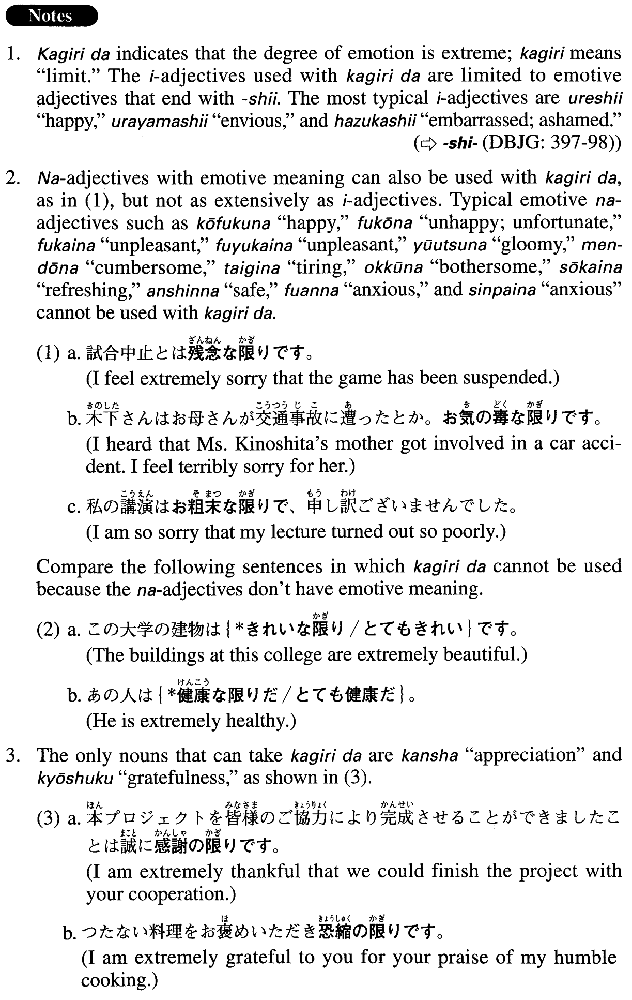

←
DoJG
→
限りだ
(A. 177)
Example sentences
(ks).
いろいろなところに行っておられるんですね。うらやましい
限りです
。
You are traveling to all sorts of places. I'm extremely envious of you.
(a).
電子メールでご連絡いただければ、嬉しい
限りです
。
I would be extremely happy if you would kindly contact me by e-mail.
(b).
私の講演が皆様の知性を刺激できれば喜ばしい
限りです
。
If my lecture stimulates you intellectually, I will be extremely happy.
(c).
あなたの明るい顔が見られなくなって、寂しい
限りです
。
I cannot see your cheerful face any longer, and I couldn't feel lonelier.
(d).
私がかいた絵をお見せするのはお恥ずかしい
限りです
。
[a humble expression] It really makes me feel embarrassed to show you my painting.
(e).
その頃は大阪に単身赴任で行っていたが、家族から離れて夜一人でアパートで食事をするのはわびしい
限りだった
。
During that time I was working in Osaka, but leaving my family behind and eating dinner alone in my apartment made me feel so miserable.
Formation
Adjective い informal nonpast
限りだ
Where adjectiveい＝emotive adjective
嬉しい
限りだ
I am extremely happy
